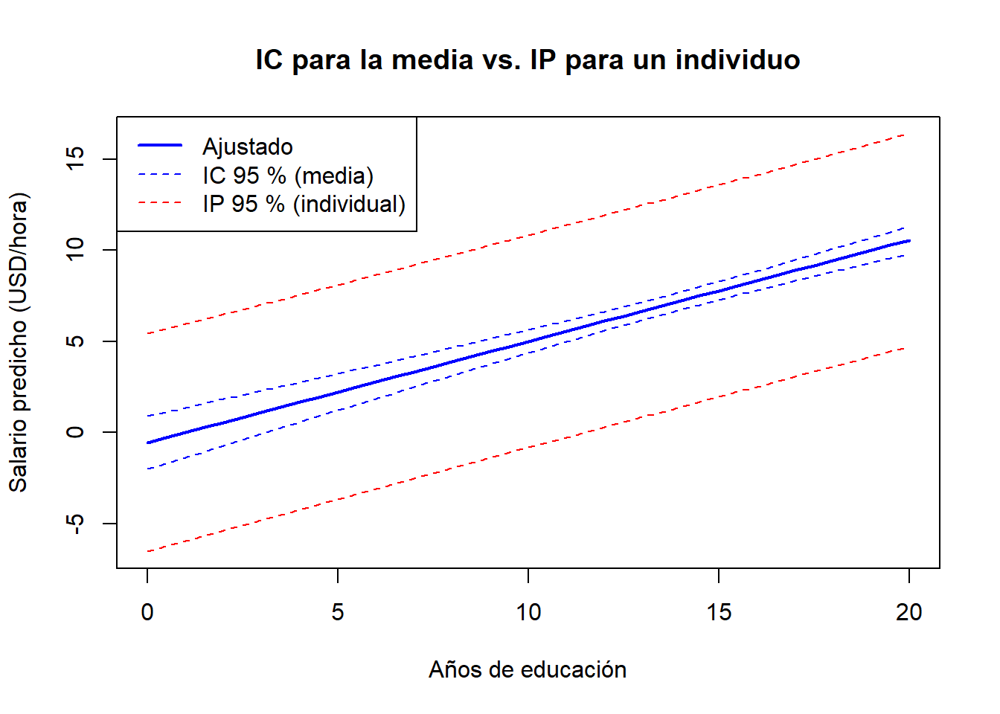

Code
library(wooldridge)
data("wage1")Al terminar este capítulo, el lector debería ser capaz de:
predict(), AIC(), BIC() y anova() en R para predecir a partir de un modelo ajustado y para elegir entre especificaciones competidoras.Dos selectores entrevistan al mismo candidato —24 años, 16 años de educación, 5 años de experiencia y 2 años de antigüedad en su puesto— y ambos ajustan la misma regresión salarial sobre los mismos datos. El primero reporta un intervalo del 95 % de [$5{,}7, $7{,}2] para el salario esperado; el segundo reporta [$0{,}5, $12{,}4]. Ambos son correctos. ¿Cuál es cuál?
La respuesta depende de una distinción fácil de pasar por alto: el primer selector está reportando incertidumbre sobre el salario medio de las personas como este candidato, mientras que el segundo está reportando incertidumbre sobre el salario real de este candidato. El mismo modelo ajustado produce ambos números —responden a preguntas distintas—. Este capítulo trata sobre esa distinción y sobre la cuestión asociada de cómo elegir entre modelos competidores en primer lugar.
el Capítulo 4 hemos usado la regresión con un único propósito: estimar el efecto ceteris paribus de \(x\) sobre \(y\). El coeficiente \(\beta_j\) era el objeto de interés, y todo el aparato de los supuestos de Gauss–Markov, los tests \(t\) y los tests \(F\) estaba al servicio de obtener \(\hat\beta_j\) correctamente —insesgado, eficiente y con errores estándar válidos—.
La econometría también tiene un segundo uso, igualmente legítimo: la predicción. Aquí no nos interesa particularmente el valor de ningún \(\beta_j\) individual; nos importa la precisión del valor ajustado \(\hat y_0\) para una nueva observación.
Los dos objetivos se solapan, pero no son lo mismo:
Un modelo puede ser excelente para un propósito y pobre para el otro. Un predictor de accidentes de tráfico que incluya «ventas de helados» como regresor puede funcionar bien porque los helados son un proxy del calor; resulta inútil como consejo causal de política sobre los helados. A la inversa, una estimación por variables instrumentales del rendimiento de la educación puede identificar un parámetro causal limpio a partir de un fragmento ínfimo de la variación de los datos, mientras deja sin explicar la mayor parte de la variabilidad de los salarios.
Un \(R^2\) alto indica que los valores ajustados siguen bien a \(y\). No dice que ningún coeficiente individual mida un efecto causal. La estrategia de identificación —asignación aleatoria, un instrumento, un experimento natural o un argumento creíble de que \(\mathbb{E}[u \mid x] = 0\)— es lo que autoriza la interpretación causal. Los criterios de selección basados en el ajuste, como el \(R^2\) ajustado, el AIC y el BIC, son herramientas para la predicción; no pueden rescatar un modelo aquejado de sesgo por variable omitida.
Por claridad, consideremos primero el modelo de regresión lineal simple (RLS):
\[ y_i = \beta_0 + \beta_1 x_i + u_i, \qquad \mathbb{E}[u_i \mid x_i] = 0. \]
Dadas las estimaciones MCO \((\hat\beta_0, \hat\beta_1)\) y un nuevo valor \(x_0\) del regresor, la predicción puntual es simplemente el valor ajustado de la regresión en \(x_0\):
\[ \hat y_0 = \hat\beta_0 + \hat\beta_1 x_0. \]
La misma construcción se extiende, término a término, a la regresión lineal múltiple (RLM). Si \(x_0 = (1, x_{01}, x_{02}, \dots, x_{0k})\) es el vector fila de valores de los regresores para la nueva observación, entonces
\[ \hat y_0 = \hat\beta_0 + \hat\beta_1 x_{01} + \hat\beta_2 x_{02} + \cdots + \hat\beta_k x_{0k}. \]
¿Cómo de buena es esta predicción? La cantidad natural es el error de predicción:
\[ f \equiv y_0 - \hat y_0 = (\beta_0 + \beta_1 x_0 + u_0) - (\hat\beta_0 + \hat\beta_1 x_0). \]
Tomando esperanza condicional bajo RLM.1–RLM.4,
\[ \mathbb{E}[f \mid x_0] = (\beta_0 + \beta_1 x_0) - \mathbb{E}[\hat\beta_0 + \hat\beta_1 x_0] = 0. \]
Por tanto, \(\hat y_0\) es un predictor insesgado de \(y_0\). De hecho, bajo RLS.1–RLS.5 (y sus análogos para RLM) se puede demostrar que \(\hat y_0\) tiene la varianza más pequeña entre todos los predictores lineales insesgados: es el mejor predictor lineal insesgado (en inglés, Best Linear Unbiased Predictor o BLUP).
El mismo número \(\hat y_0\) es tanto la predicción puntual del valor individual \(y_0\) como la estimación de la media condicional \(\mathbb{E}[y \mid x_0]\). Las dos interpretaciones de \(\hat y_0\) son numéricamente idénticas, pero tienen una incertidumbre distinta. La sección siguiente lo concreta.
Una estimación puntual rara vez es suficiente. Necesitamos un intervalo que cuantifique la incertidumbre —y hay dos incertidumbres distintas que cuantificar—.
La media condicional \(\mathbb{E}[y \mid x_0] = \beta_0 + \beta_1 x_0\) es una cantidad poblacional fija (no aleatoria). Su estimador es \(\hat y_0 = \hat\beta_0 + \hat\beta_1 x_0\), que es aleatorio porque las estimaciones MCO son aleatorias. Su varianza es
\[ \operatorname{Var}(\hat y_0 \mid x) = \sigma^2 \left[\frac{1}{n} + \frac{(x_0 - \bar x)^2}{\mathrm{SCT}_x}\right], \]
donde \(\mathrm{SCT}_x = \sum_{i=1}^{n} (x_i - \bar x)^2\) es la suma de cuadrados total del regresor. Reemplazando \(\sigma^2\) por el estimador \(\hat\sigma^2 = \mathrm{SCR}/(n - k - 1)\), el intervalo de confianza al \(100(1 - \alpha)\%\) para la media predicha es
\[ \hat y_0 \;\pm\; t_c \cdot \hat\sigma \sqrt{\frac{1}{n} + \frac{(x_0 - \bar x)^2}{\mathrm{SCT}_x}}, \]
con \(t_c\) el valor crítico apropiado de una distribución \(t\) con \(n - k - 1\) grados de libertad.
El nuevo resultado \(y_0 = \beta_0 + \beta_1 x_0 + u_0\) es aleatorio porque tanto las estimaciones MCO como el nuevo error \(u_0\) son aleatorios. Suponiendo que \(u_0\) es independiente de la muestra,
\[ \operatorname{Var}(y_0 - \hat y_0 \mid x) = \sigma^2 \left[1 + \frac{1}{n} + \frac{(x_0 - \bar x)^2}{\mathrm{SCT}_x}\right]. \]
El «\(1\)» extra dentro del corchete es la contribución de \(u_0\) —la parte irreducible de la nueva extracción que ninguna cantidad de datos podría predecir—. El intervalo de predicción al \(100(1 - \alpha)\%\) para \(y_0\) es
\[ \hat y_0 \;\pm\; t_c \cdot \hat\sigma \sqrt{1 + \frac{1}{n} + \frac{(x_0 - \bar x)^2}{\mathrm{SCT}_x}}. \]
En RLM la misma lógica conduce a \(\operatorname{Var}(y_0 - \hat y_0 \mid X) = \sigma^2 [1 + x_0'(X'X)^{-1} x_0]\), obteniéndose el IC para la media simplemente eliminando el «\(1\)» del corchete.
| Cantidad objetivo | Ingrediente de la varianza | Intervalo | Anchura |
|---|---|---|---|
| Media \(\mathbb{E}[y \mid x_0]\) | \(1/n + (x_0 - \bar x)^2 / \mathrm{SCT}_x\) | Intervalo de confianza | Más estrecho |
| Individual \(y_0\) | \(1 + 1/n + (x_0 - \bar x)^2 / \mathrm{SCT}_x\) | Intervalo de predicción | Más ancho |
El IP es siempre más ancho que el IC. La diferencia la marca el «1»: la varianza irreducible de la nueva extracción \(u_0\).
Algunas observaciones adicionales sobre las fórmulas:
Supongamos que hemos estimado la RLS
\[ \hat y = 2{,}0 + 0{,}7\,x, \]
con tamaño muestral \(n = 100\), \(\bar x = 12\), \(\mathrm{SCT}_x = 200\) y \(\hat\sigma^2 = 4\) (de modo que \(\hat\sigma = 2\)). Queremos predecir en \(x_0 = 16\). Usando \(t_c \approx 1{,}98\) para un intervalo al 95 % con 98 grados de libertad:
Predicción puntual. \(\hat y_0 = 2{,}0 + 0{,}7 \times 16 = 13{,}2\).
IC para la media \(\mathbb{E}[y \mid x_0]\). \[ \mathrm{ee}(\hat y_0) = \hat\sigma \sqrt{\tfrac{1}{100} + \tfrac{(16-12)^2}{200}} = 2\sqrt{0{,}01 + 0{,}08} = 0{,}6. \] \[ \text{IC 95\%:} \quad 13{,}2 \pm 1{,}98 \times 0{,}6 = [12{,}01,\ 14{,}39]. \]
Intervalo de predicción para \(y_0\). \[ \mathrm{ee}(f) = \hat\sigma \sqrt{1 + \tfrac{1}{100} + \tfrac{(16-12)^2}{200}} = 2\sqrt{1{,}09} \approx 2{,}088. \] \[ \text{IP 95\%:} \quad 13{,}2 \pm 1{,}98 \times 2{,}088 = [9{,}06,\ 17{,}34]. \]
El IC tiene una anchura de unos \(\pm 1{,}20\) en torno a la predicción puntual; el IP, de unos \(\pm 4{,}14\). La proporción la fija el tamaño relativo del «\(1\)» frente a \(1/n + (x_0 - \bar x)^2/\mathrm{SCT}_x = 0{,}09\). Aquí la incertidumbre por la nueva extracción supera en un orden de magnitud a la incertidumbre por los parámetros.
Los modelos salariales reales incluyen más de un regresor. Nada esencial cambia en la construcción de \(\hat y_0\) y los dos intervalos —las fórmulas pasan a ser versiones vector-matriz de las de la RLS—.
Para un vector fila \(x_0 = (1, x_{01}, \dots, x_{0k})\),
\[ \hat y_0 = x_0' \hat\beta, \qquad \operatorname{Var}(y_0 - \hat y_0 \mid X) = \sigma^2 \left[1 + x_0' (X'X)^{-1} x_0 \right]. \]
Eliminar el «\(1\)» proporciona la varianza de \(\hat y_0\) como estimador de \(\mathbb{E}[y \mid x_0]\). En R, la función predict() realiza todo esto automáticamente con interval = "confidence" o interval = "prediction". El usuario proporciona el nuevo \(x_0\) como un data frame; la función devuelve el ajuste y los límites. Lo probamos sobre wage1 en la práctica.
Las fórmulas de predicción asumen que \((y_0, x_0)\) proviene de la misma población que la muestra. Si \(x_0\) está muy fuera del rango de los regresores realmente observados —pongamos, predecir el salario de alguien con 30 años de educación y 80 años de experiencia—, ambos intervalos pueden calcularse técnicamente, pero ninguno es fiable. No hay información en la muestra sobre lo que ocurre en esos valores. Mantente dentro del soporte de los datos.
Supongamos que tenemos varios modelos de regresión candidatos para el mismo resultado. ¿Cómo elegimos? Cuatro criterios se utilizan habitualmente.
El coeficiente de determinación
\[ R^2 = \frac{\mathrm{SCE}}{\mathrm{SCT}} = 1 - \frac{\mathrm{SCR}}{\mathrm{SCT}} \]
mide la proporción de la variación de \(y\) explicada por el modelo. Como mecanismo de selección de modelos tiene un defecto fatal: añadir cualquier regresor no puede reducir \(R^2\). Incluso un regresor de puro ruido, casi con seguridad, aumentará ligeramente \(R^2\), porque MCO siempre puede encontrar una pequeña combinación lineal del ruido que ajuste por casualidad parte de la variación residual.
Si eligiéramos el modelo maximizando \(R^2\), incluiríamos todos los regresores a nuestro alcance —incluyendo decenas de irrelevantes—. El modelo ajustaría la muestra de maravilla y predeciría pésimamente fuera de muestra. Este es el clásico problema del sobreajuste. Las transparencias lo ilustran simulando un modelo con dos regresores genuinos \(X_1, X_2\) y añadiendo después 196 variables «basura» de puro ruido: el \(R^2\) asciende sostenidamente hacia 1 a medida que se acumula la basura, aunque ninguna de las nuevas variables tenga contenido predictivo.
Una solución simple es penalizar la complejidad. El \(R^2\) ajustado es
\[ \bar R^2 = 1 - \frac{\mathrm{SCR} / (n - k - 1)}{\mathrm{SCT} / (n - 1)}, \]
donde \(k\) es el número de regresores (excluida la constante). El numerador \(\mathrm{SCR}/(n - k - 1)\) es \(\hat\sigma^2\), el estimador insesgado de la varianza del error. Añadir un regresor reduce \(\mathrm{SCR}\) pero también reduce \(n - k - 1\); \(\bar R^2\) sube solo si la ganancia en ajuste supera el coste del parámetro adicional.
Algunos hechos útiles:
El criterio de información de Akaike y el criterio de información Bayesiano combinan el ajuste del modelo (una log-verosimilitud) con una penalización por complejidad:
\[ \mathrm{AIC} = -2 \ln \hat L + 2(k + 1), \qquad \mathrm{BIC} = -2 \ln \hat L + (k + 1) \ln n. \]
Para un modelo lineal con errores normales, la log-verosimilitud es una transformación monótona de \(-\mathrm{SCR}/n\), de modo que, salvo constantes aditivas,
\[ \mathrm{AIC} \approx n \ln\!\left(\frac{\mathrm{SCR}}{n}\right) + 2(k+1), \qquad \mathrm{BIC} \approx n \ln\!\left(\frac{\mathrm{SCR}}{n}\right) + (k+1) \ln n. \]
Valores menores de AIC y BIC indican mejores modelos. Ambos criterios equilibran el ajuste (el término en SCR) con la complejidad (el segundo término). La única diferencia es el tamaño de la penalización: AIC cobra \(2\) por parámetro adicional, BIC cobra \(\ln n\). Para \(n \ge 8\), \(\ln n > 2\), por lo que el BIC penaliza la complejidad con más fuerza y tiende a seleccionar modelos más parsimoniosos. El AIC está construido para minimizar el error de predicción; el BIC para identificar el modelo «verdadero» cuando existe.
Si dos modelos usan distintas variables dependientes (por ejemplo, wage y log(wage)), o se estiman en submuestras distintas, sus AIC y BIC no son comparables —las log-verosimilitudes están en escalas diferentes—. La misma advertencia se aplica a \(R^2\) y \(\bar R^2\).
Cuando un modelo está anidado dentro de otro —el modelo más pequeño se obtiene fijando a cero algunos coeficientes del modelo mayor—, el test \(F\) de restricciones conjuntas (Capítulo 4) es el test formal de «¿son estos regresores adicionales conjuntamente informativos?». En R, anova(pequeño, grande) lo realiza. El test responde a una pregunta distinta de AIC/BIC: pregunta si los datos rechazan el modelo pequeño en favor del grande, no qué modelo es el «mejor» según algún criterio predictivo.
En la práctica reportamos los cuatro criterios uno al lado del otro. Suelen coincidir en la ordenación general; cuando discrepan, la discrepancia es informativa:
Y, siempre: los criterios de selección de modelos eligen el modelo que mejor ajusta según el criterio dado. No eligen el modelo que mejor identifica un parámetro causal. Esa elección pertenece a la estrategia de identificación.
Trabajamos con el conjunto de datos wage1, que contiene 526 trabajadores estadounidenses (Capítulo 1). El objetivo es (i) ajustar una secuencia de modelos salariales anidados, (ii) compararlos mediante \(\bar R^2\), AIC, BIC y un test \(F\), (iii) producir predicciones puntuales y los dos intervalos para un trabajador concreto, y (iv) visualizar la diferencia entre la banda de confianza para la media y la banda de predicción para un individuo.
library(wooldridge)
data("wage1")Enriquecemos la especificación progresivamente.
modelo1 <- lm(wage ~ educ, data = wage1)
modelo2 <- lm(wage ~ educ + exper, data = wage1)
modelo3 <- lm(wage ~ educ + exper + tenure, data = wage1)
modelo4 <- lm(wage ~ educ + exper + tenure + female + married, data = wage1)Recogemos \(R^2\), \(\bar R^2\), AIC y BIC en una única tabla.
tab <- sapply(list(m1 = modelo1, m2 = modelo2, m3 = modelo3, m4 = modelo4),
function(m) c(
R2 = summary(m)$r.squared,
R2adj = summary(m)$adj.r.squared,
AIC = AIC(m),
BIC = BIC(m)))
round(tab, 3) m1 m2 m3 m4
R2 0.165 0.225 0.306 0.368
R2adj 0.163 0.222 0.302 0.362
AIC 2777.423 2739.937 2683.662 2638.600
BIC 2790.219 2756.999 2704.988 2668.457Algunas observaciones que se pueden leer de esta tabla:
modelo1 a modelo4. Eso es mecánico: añadir regresores no puede reducir \(R^2\).modelo1 a modelo4 (cuanto más bajo, mejor). Los cuatro criterios coinciden: de estas cuatro especificaciones, modelo4 es la preferida.¿Son female y married conjuntamente informativas una vez que educ, exper y tenure están en el modelo?
anova(modelo3, modelo4)Analysis of Variance Table
Model 1: wage ~ educ + exper + tenure
Model 2: wage ~ educ + exper + tenure + female + married
Res.Df RSS Df Sum of Sq F Pr(>F)
1 522 4966.3
2 520 4524.0 2 442.27 25.418 2.938e-11 ***
---
Signif. codes: 0 '***' 0.001 '**' 0.01 '*' 0.05 '.' 0.1 ' ' 1El estadístico \(F\) compara las dos SCR; si su \(p\)-valor es pequeño, rechazamos la nula conjunta \(H_0:\beta_{\text{female}} = \beta_{\text{married}} = 0\). En wage1 resulta muy pequeño, confirmando con un test formal la preferencia de AIC/BIC por modelo4.
Ahora añadimos deliberadamente tres regresores de puro ruido a modelo4 y observamos qué le ocurre a cada criterio.
set.seed(42)
wage1$ruido1 <- rnorm(nrow(wage1))
wage1$ruido2 <- rnorm(nrow(wage1))
wage1$ruido3 <- rnorm(nrow(wage1))
modelo_basura <- lm(wage ~ educ + exper + tenure + female + married +
ruido1 + ruido2 + ruido3, data = wage1)
rbind(
modelo4 = c(R2 = summary(modelo4)$r.squared,
R2adj = summary(modelo4)$adj.r.squared,
AIC = AIC(modelo4), BIC = BIC(modelo4)),
modelo_basura = c(R2 = summary(modelo_basura)$r.squared,
R2adj = summary(modelo_basura)$adj.r.squared,
AIC = AIC(modelo_basura), BIC = BIC(modelo_basura))) R2 R2adj AIC BIC
modelo4 0.3681887 0.3621136 2638.600 2668.457
modelo_basura 0.3708921 0.3611573 2642.345 2684.998Inspeccionemos la salida: \(R^2\) ha subido ligeramente (como tenía que hacer), pero \(\bar R^2\) ha bajado, y tanto AIC como BIC han subido. Los tres regresores de puro ruido parecen superficialmente útiles para el \(R^2\) a secas; cada criterio penalizado los desenmascara. Esta es la razón completa por la que se usan \(\bar R^2\), AIC o BIC en lugar del \(R^2\) bruto para elegir un modelo.
Tomemos el candidato de la pregunta inicial: 16 años de educación, 5 años de experiencia, 2 años de antigüedad, mujer, soltera. Usamos modelo4.
nuevo_trabajador <- data.frame(educ = 16, exper = 5, tenure = 2,
female = 1, married = 0)
predict(modelo4, newdata = nuevo_trabajador) 1
5.90268 Este es \(\hat y_0\) —el número único que el selector ofrecería como predicción salarial—.
La misma función predict() entrega el IC para la media y el IP para el individuo.
predict(modelo4, newdata = nuevo_trabajador,
interval = "confidence", level = 0.95) fit lwr upr
1 5.90268 5.323082 6.482277predict(modelo4, newdata = nuevo_trabajador,
interval = "prediction", level = 0.95) fit lwr upr
1 5.90268 0.07919504 11.72616El primer intervalo es la respuesta del selector a «¿cuál es el salario medio de las mujeres con estas características?». El segundo es la respuesta a «¿qué salario podría ganar realmente esta mujer?». El IP es mucho más ancho —en este conjunto de datos, un orden de magnitud más ancho— porque incluye la varianza irreducible de la nueva extracción \(u_0\).
Para que las fórmulas resulten tangibles, calcularemos el IC a mano y compararemos:
yhat <- predict(modelo4, newdata = nuevo_trabajador, se.fit = TRUE)
tc <- qt(0.975, df = modelo4$df.residual)
ic_manual <- c(yhat$fit - tc * yhat$se.fit,
yhat$fit + tc * yhat$se.fit)
ic_manual 1 1
5.323082 6.482277 # Y el intervalo de predicción, usando EE(f)^2 = EE(yhat)^2 + sigma_hat^2
sig2 <- summary(modelo4)$sigma^2
ee_pred <- sqrt(yhat$se.fit^2 + sig2)
ip_manual <- c(yhat$fit - tc * ee_pred,
yhat$fit + tc * ee_pred)
ip_manual 1 1
0.07919504 11.72616433 Estos valores deben coincidir (salvo redondeo) con los límites devueltos por predict() en el paso 6. La descomposición \(\operatorname{Var}(y_0 - \hat y_0) = \operatorname{Var}(\hat y_0) + \sigma^2\) es la versión operativa de «dos fuentes de incertidumbre: los parámetros y la nueva extracción».
educLa distinción entre los dos intervalos se aprecia con más claridad en un gráfico. Calculamos ambas bandas sobre una rejilla de valores de educación (manteniendo el resto de regresores fijos) y las representamos sobre la recta ajustada.
rejilla <- data.frame(educ = seq(0, 20, by = 0.5),
exper = 5, tenure = 3,
female = 0, married = 1)
banda_ic <- predict(modelo4, newdata = rejilla, interval = "confidence")
banda_ip <- predict(modelo4, newdata = rejilla, interval = "prediction")
plot(rejilla$educ, banda_ic[, "fit"], type = "l", lwd = 2, col = "blue",
xlab = "Años de educación",
ylab = "Salario predicho (USD/hora)",
main = "IC para la media vs. IP para un individuo",
ylim = range(banda_ip))
lines(rejilla$educ, banda_ic[, "lwr"], lty = 2, col = "blue")
lines(rejilla$educ, banda_ic[, "upr"], lty = 2, col = "blue")
lines(rejilla$educ, banda_ip[, "lwr"], lty = 2, col = "red")
lines(rejilla$educ, banda_ip[, "upr"], lty = 2, col = "red")
legend("topleft",
legend = c("Ajustado", "IC 95 % (media)", "IP 95 % (individual)"),
col = c("blue", "blue", "red"),
lty = c(1, 2, 2), lwd = c(2, 1, 1))
Dos rasgos del gráfico merecen comentario:
educ. La distancia vertical entre las dos bandas es, esencialmente, \(\pm t_c \hat\sigma\) —la contribución de \(u_0\)—.educ, lejos de la media muestral. Predecir el salario de un trabajador sin escolaridad, o con 20 años de escolaridad, es intrínsecamente menos preciso que predecir cerca de la media muestral. Es el término \((x_0 - \bar x)^2 / \mathrm{SCT}_x\) de la fórmula de la varianza haciendo su trabajo.Ya podemos responder a la pregunta inicial. El intervalo estrecho es el IC para el salario medio de los trabajadores con el perfil del candidato; el intervalo ancho es el IP para el salario de este candidato. Los dos provienen del mismo modelo, sobre los mismos datos, con la diferencia de una sola palabra en la llamada a predict().
Seis preguntas cortas. Intente cada una antes de desplegar la respuesta.
Un selector quiere conocer el salario medio de todos los trabajadores de la población que comparten el perfil del candidato. El intervalo relevante es:
Respuesta: B. El IC para \(\mathbb{E}[y \mid x_0]\) tiene como objetivo la media condicional y es el más estrecho de los dos. El IP de la opción A sería la elección correcta para «¿qué salario podría ganar realmente este candidato?».
El intervalo de predicción al 95 % para \(y_0\) es más ancho que el intervalo de confianza al 95 % para \(\mathbb{E}[y \mid x_0]\) porque:
Respuesta: B. Ambos intervalos usan el mismo \(t_c\). El IP añade un «1» dentro del corchete de la fórmula de la varianza, lo que captura \(\operatorname{Var}(u_0) = \sigma^2\) —algo que los datos no pueden predecir nunca—.
Manteniendo la muestra fija, tanto el IC para la media como el IP para un individuo son más anchos cuando:
Respuesta: C. Ambas varianzas contienen el término \((x_0 - \bar x)^2 / \mathrm{SCT}_x\), que crece a medida que \(x_0\) se aleja de \(\bar x\). Las predicciones son más precisas cerca del centro de los datos y menos precisas en los extremos; extrapolar fuera del soporte de los datos es peligroso.
Añadir un regresor de puro ruido a un modelo MCO:
Respuesta: B. \(R^2\) nunca cae al añadir un regresor. \(\bar R^2\) penaliza la complejidad mediante la corrección por grados de libertad, así que un regresor irrelevante puede reducirlo. AIC y BIC también empeorarán.
El criterio de Akaike puede usarse legítimamente para comparar:
wage sobre educ frente a una regresión de log(wage) sobre educ.Respuesta: C. AIC (y BIC) solo son comparables cuando la variable dependiente, la muestra y el método de estimación son los mismos; en caso contrario, las log-verosimilitudes están en escalas distintas. La misma advertencia se aplica a \(R^2\) y \(\bar R^2\).
El modelo con el menor AIC es necesariamente el mejor para:
Respuesta: B. El AIC es un criterio predictivo. La identificación causal depende del supuesto \(\mathbb{E}[u \mid x] = 0\), que es una afirmación sobre el diseño (asignación aleatoria, un instrumento, un argumento creíble), no sobre el ajuste del modelo. Un modelo excelente desde el punto de vista predictivo puede seguir sufriendo sesgo por variable omitida.
Ejercicio 5.1 ★ — Los dos intervalos a mano. Suponga que ha ajustado \(\hat y = 2{,}0 + 0{,}7\,x\) sobre una muestra con \(n = 100\), \(\bar x = 12\), \(\mathrm{SCT}_x = 200\) y \(\hat\sigma^2 = 4\). Tome \(x_0 = 16\) y use \(t_c = 1{,}98\).
Ejercicio 5.2 ★ — Lectura de una tabla de selección. Usando wage1, estime los cuatro modelos anidados de la práctica y presente una tabla 4×4 con \(R^2\), \(\bar R^2\), AIC y BIC. ¿Qué modelo gana bajo cada criterio? ¿Coinciden los cuatro?
En wage1 los cuatro criterios coinciden en el orden: \(R^2\) y \(\bar R^2\) son máximos para modelo4; AIC y BIC son mínimos para modelo4. Cuando los cuatro coinciden, la elección es sencilla. Cuando el BIC selecciona un modelo menor que el AIC (lo que puede ocurrir con muestras grandes), la diferencia refleja la penalización más fuerte del BIC (\(\ln n > 2\)); la elección depende entonces de si se prioriza la precisión predictiva (AIC) o la parsimonia (BIC).
Ejercicio 5.3 ★ — Un trabajador con 12 años y otro con 20 años. Usando modelo4 de la práctica, calcule el intervalo de predicción al 95 % para dos perfiles: (i) educ = 12, exper = 10, tenure = 5, female = 0, married = 1 y (ii) educ = 20, exper = 10, tenure = 5, female = 0, married = 1. ¿Es el segundo intervalo más ancho, más estrecho o igual de ancho que el primero? ¿Por qué?
El segundo intervalo es más ancho. Veinte años de educación está lejos de la media muestral de educ en wage1 (en torno a 12{,}5 años), de modo que el término \((x_0 - \bar x)' (X'X)^{-1} (x_0 - \bar x)\) de la fórmula de la varianza es mayor. Esta es la advertencia contra la extrapolación: cuanto más se aleje \(x_0\) del centro de los datos, más anchos se vuelven ambos intervalos, y en algún punto se hacen tan anchos que la predicción deja de ser informativa.
Ejercicio 5.4 ★★ — Una variable basura en sus propios datos. Tome cualquier conjunto de datos a su elección (real o simulado). Ajuste un modelo base con uno o dos regresores genuinos e indique \(R^2\), \(\bar R^2\), AIC y BIC. Añada cinco regresores de puro ruido gaussiano (rnorm(n)), reestime y vuelva a indicar los cuatro números. ¿Cuánto cambia cada uno? ¿Qué criterio se deja engañar y cuál no?
La solución completa figura en la Edición del Profesor.
Ejercicio 5.5 ★★ — Causalidad vs. predicción con un confusor. Suponga que y es la nota real, x son las horas de estudio y z es la habilidad innata. Horas y habilidad están positivamente correlacionadas. Estima dos modelos sobre una muestra grande: (a) y ~ x, (b) y ~ x + z. Razone, informalmente, que:
¿Qué conclusión extrae sobre el uso de AIC/BIC para elegir un modelo causal?
La solución completa figura en la Edición del Profesor.
Ejercicio 5.6 ★★★ — Predicción fuera de muestra. Divida wage1 en un conjunto de entrenamiento (las primeras 400 observaciones) y un conjunto de prueba (las 126 restantes). Estime modelo1–modelo4 sobre el conjunto de entrenamiento. Para cada modelo, calcule (i) el \(R^2\) dentro de muestra sobre el conjunto de entrenamiento, y (ii) el error cuadrático medio fuera de muestra sobre el conjunto de prueba: \(\frac{1}{n_{\text{prueba}}} \sum_{i \in \text{prueba}} (y_i - \hat y_i)^2\). ¿Qué modelo gana en \(R^2\) dentro de muestra? ¿Cuál gana en ECM fuera de muestra? Comente la relación entre \(\bar R^2\)/AIC/BIC calculados en la muestra de entrenamiento y el ECM fuera de muestra.
La solución completa figura en la Edición del Profesor.